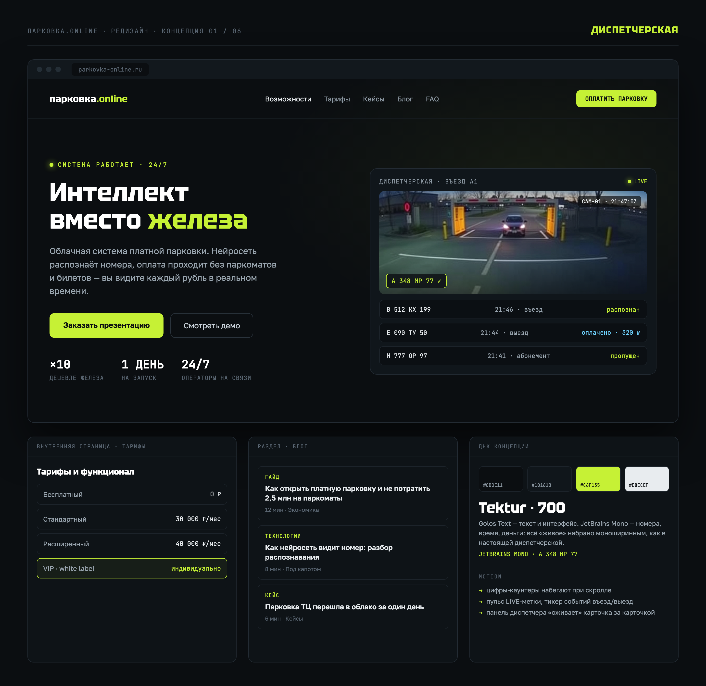
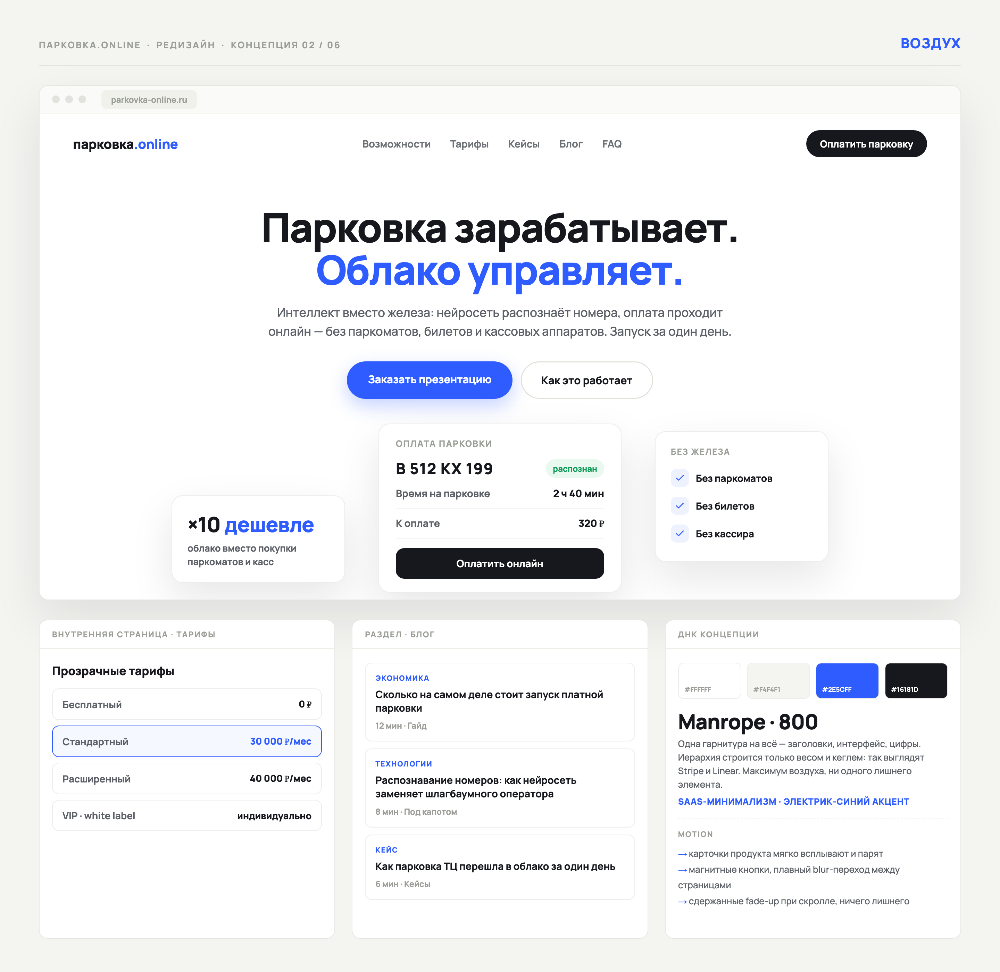
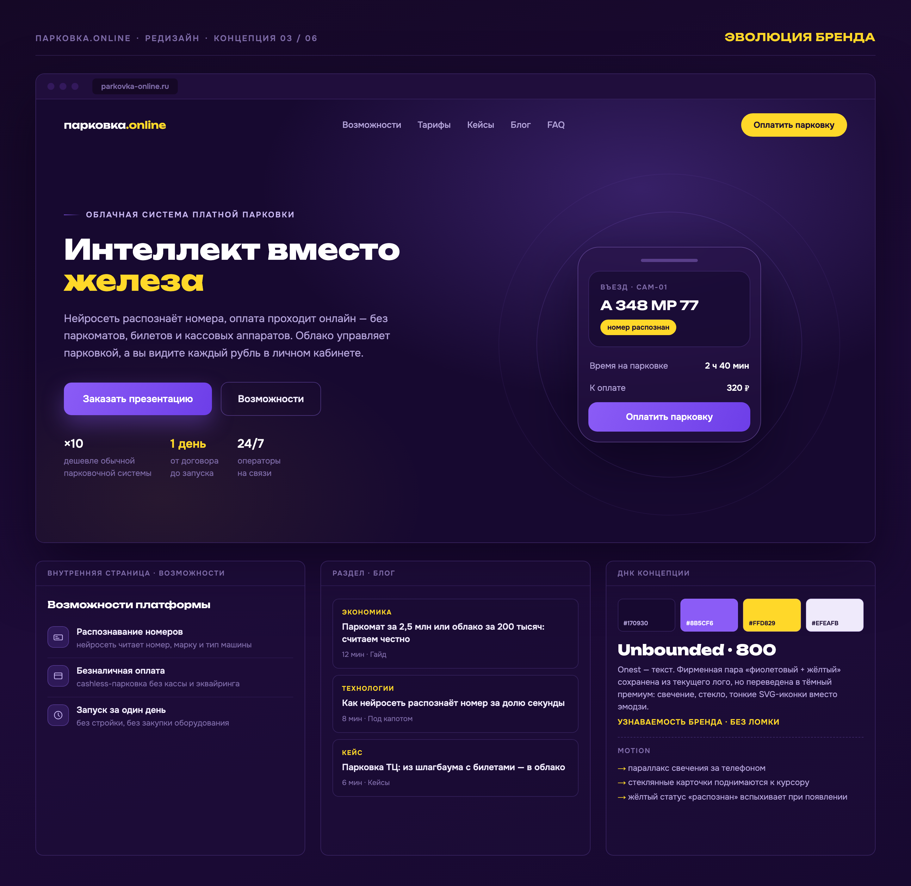
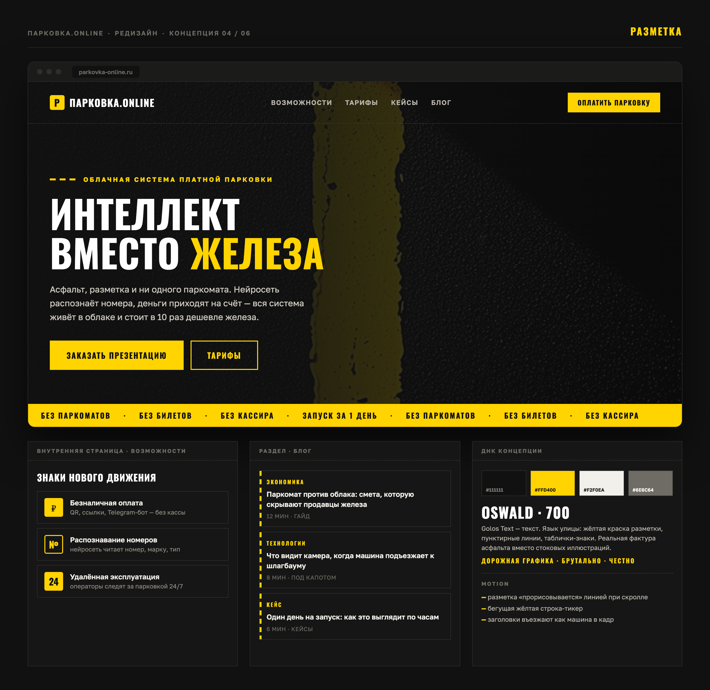
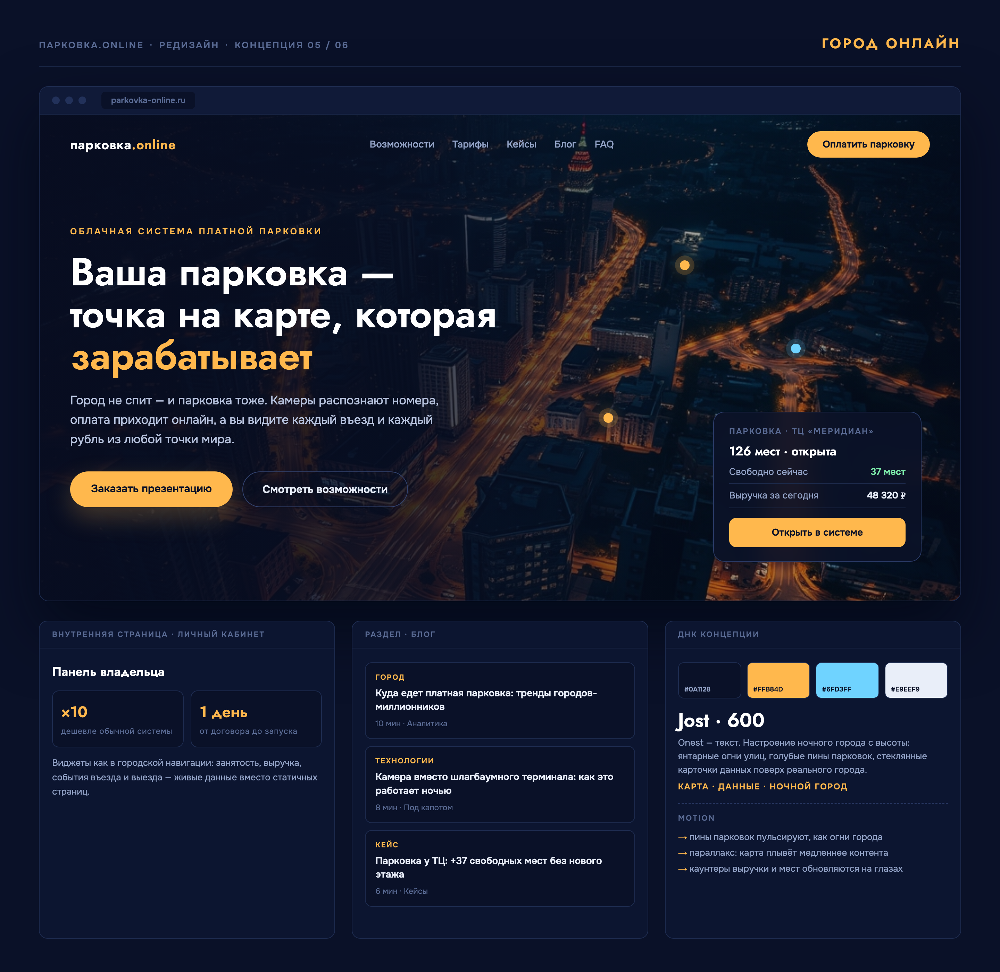
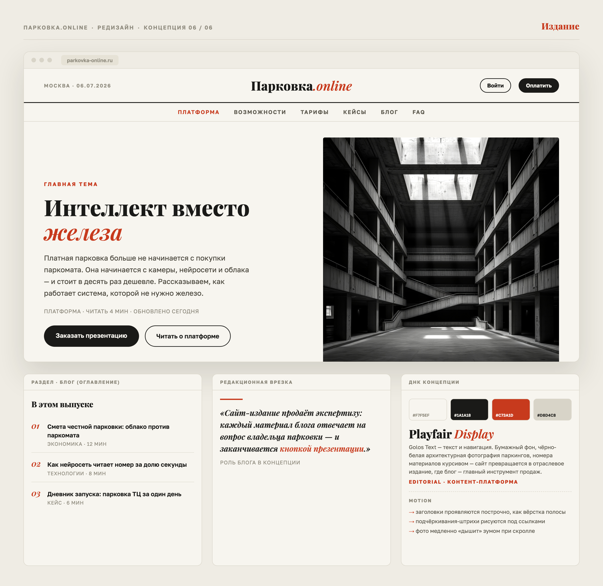

Сайт вырастает из лендинга на Tilda в полноценный продукт с блогом и внутренними страницами. Ниже — шесть разных визуальных языков: у каждого своя идея, настроение, палитра, типографика и motion-сценарий. Каждая концепция — не мудборд из чужих картинок, а свёрстанный вручную макет с реальным контентом платформы: обложка, фрагменты внутренних страниц и «ДНК» стиля на одном листе.

Идея. Сайт показывает продукт в действии: прямо на обложке живёт панель диспетчера — камера въезда, распознанные номера, оплаты. Посетитель не читает о системе, а видит её работу. Данные (номера, время, деньги) набраны моноширинным шрифтом, как в настоящем терминале.
Как развить в полноценный сайт. Тёмная «диспетчерская» тема несёт весь сайт: блог выглядит как журнал событий, тарифы — как строки конфигурации, кейсы — как отчёты смены. Раздел блога получает свои рубрики (Экономика, Под капотом, Кейсы) и читается как профессиональный инструмент, а не маркетинговая обёртка.

Идея. Максимум воздуха и ни одного лишнего элемента. Крупный заголовок-манифест, один электрик-синий акцент и парящие карточки продукта: экран оплаты, выгода «×10 дешевле», чек-лист «без железа». Так выглядят продукты, которым доверяют деньги.
Как развить в полноценный сайт. Самая масштабируемая система: сетка и одна гарнитура легко несут любые новые страницы — блог, документацию, кейсы, личный кабинет. Блог оформляется как у больших SaaS: чистые карточки, крупные заголовки, много воздуха. Идеальный вариант, если план — быстро наращивать разделы.

Идея. Фирменную пару «фиолетовый + жёлтый» не ломаем — взрослим. Плоские заливки и эмодзи текущего сайта заменяются глубоким фиолетовым фоном, стеклянными карточками, свечением и тонкими SVG-иконками. Узнаваемость сохраняется полностью: постоянные клиенты видят «тот же бренд, но повзрослевший».
Как развить в полноценный сайт. Самый безопасный путь редизайна: логотип, рассылки и материалы компании остаются в силе. Стеклянные карточки становятся универсальным модулем — возможности, тарифы, посты блога, отзывы. Жёлтый работает только как сигнал действия и статусов, фиолетовый держит атмосферу.

Идея. Визуальный язык берём у самой парковки: фактура асфальта, жёлтая линия разметки, пунктиры, таблички-знаки. Конденсированные заглавные заголовки работают как трафаретные надписи на дороге. Ни у одного конкурента в нише не будет такого лица — сайт запоминается с первого экрана.
Как развить в полноценный сайт. Разметка становится навигационной метафорой: пунктирная линия ведёт по странице от секции к секции, посты блога — «знаки» с жёлтым кантом, этапы запуска — дорожные указатели. Бегущая жёлтая строка-тикер сшивает все страницы в одно движение.

Идея. Парковка — точка на карте города, которая зарабатывает. Ночная аэросъёмка задаёт масштаб и эмоцию, поверх города — пины парковок и стеклянные карточки живых данных: свободные места, выручка за день. Продукт сразу считывается как «городская инфраструктура», а не утилита.
Как развить в полноценный сайт. Карта — сквозной образ: на главной — город, в кейсах — конкретные объекты с цифрами, в личном кабинете — виджеты как в городской навигации. Блог получает рубрику «Город» про тренды платных парковок. Янтарный и голубой держат систему статусов во всех разделах.

Идея. Раз сайт становится платформой с блогом — делаем из этого главный козырь. Вёрстка отраслевого издания: шапка-масthead, рубрикатор, серифные заголовки, чёрно-белая архитектурная фотография паркингов. Главная читается как свежий выпуск, где продукт — главная тема номера.
Как развить в полноценный сайт. Концепция буквально построена вокруг блога: каждый материал отвечает на вопрос владельца парковки и заканчивается кнопкой презентации. Кейсы — репортажи, FAQ — рубрика «вопрос–ответ», тарифы — аккуратная «полоса объявлений». Лучший вариант для контент-маркетинга и SEO.
{kind=link}
{kind=link}
{kind=link}
{kind=link}
{kind=link}
{kind=link}